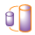
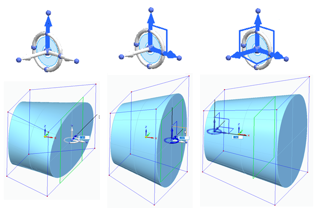
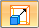
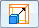
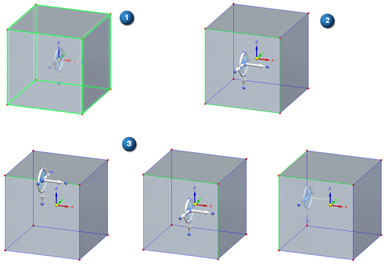
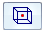

Scale command in Subdivision Modeling
Use the Scale command

to make an entire model—or portions of a model—larger or smaller by precise amounts. For example, you can scale the entire cage body to make the model larger or smaller, or you can scale only an edge, a face, or a combination of edges and faces.Scaling workflow
-
Select the cage elements to scale.
-
Use the options on the command bar to specify the direction of scale, uniform or non-uniform scaling, and the origin point for scaling.
-
Click+drag a steering wheel axis to begin scaling the body dynamically, or select an axis and type a value for precise scaling.
-
Right-click to finish.
Choosing what to scale
The Scale command operates on any elements on the cage body. The way the shape changes is based largely on the cage elements you select.
Whatever cage elements you choose to scale, all connected elements will be affected by your changes. You can choose the entire cage body, or any combination of edges and faces. Unselected cage elements that are not connected to the selected elements will not move as you scale.
Choosing how to scale
Scale direction is along one, two, or three axes.
After you select a scale direction option on the command bar—Linear Scaling, Planar Scaling, or 3 Axes Scaling—the corresponding steering wheel and scaling axes are displayed at the center of the selected elements.

Uniform or non-uniform scaling is available for planar or three-axis scaling:
-

On—Specifies uniform scaling. -

Off—Specifies non-uniform scaling.
Defining the origin of the scale
The steering wheel origin knob (the center sphere) determines the origin of the scale operation. It is placed at the geometric center of the selected elements by default.
The following example shows the steering wheel placement when:
(1) The entire cage is selected.
(2) A face is selected.
(3) One, two, or three edges are selected.

You can change the origin by manually moving the steering wheel, and then selecting these mutually exclusive options on the command bar:
-

Recenter—Moves the steering wheel origin to the center of the selection set.Note:You also can double-click the origin knob of the steering wheel to relocate it to the center of the selection set.
-
Keypoints—Use the Center of Volume option to move the steering wheel to the center of the cage. This option is especially useful when scaling using the 3-Axes option.
Scaling the shape
Click+drag a steering wheel axis to scale the model, or type a value to define the scale factor and then move the cursor.
How do I
Subdivision Modeling workflowMove cage elements
Move using Quick Move
Use symmetric mode in Subdivision Modeling
Scale a subdivision model
Split subdivision model faces
Split faces with offset
Offset cage faces
Connect cage faces or edges with a bridge
Delete and fill cage faces
Align a shape to a curve
Learn more
Introduction to Subdivision ModelingUsing PathFinder with subdivision models
Working with cage elements
Creating subdivision features
Working with subdivision features
Moving and rotating cage elements
Look up more details
Subdivision Modeling commandBox command in Subdivision Modeling
Box command bar
Cylinder command in Subdivision Modeling
Cylinder command bar
Sphere command in Subdivision Modeling
Sphere command bar
Torus command
Torus command bar
Blend command
Show Blend Values command
Split command
Split with Offset command
Bridge command
Align to Curve command
Cage Style command